Canvaでプロ級の投稿・リール・プロフィールを作ろう — Jun 2026
Canvaを使いこなして、プロ顔負けの投稿・動画・プロフィールを作れるようになろう！
Canvaの最新AI機能（高画質化・マジックレイヤー・背景除去）を理解し、4ステップで「フォローされる」Instagram投稿1枚を完成させる
Canvaのリール編集5テクニック（カット・トランジション・袋文字・タイミング・AI音声）をマスターし、プロフィール設計の3つの「裏技」（リール表紙・フィードシミュレーター・3枚連結バナー）を習得する
Canvaが2026年に大幅アップデート。単なるデザインツールを超えて、AIによる画像高画質化・マジックレイヤー（レイヤー自動分解）・AI音声生成など、プロ級の編集が無料でできるようになった。今日は「静止画」と「動画」両方の制作フローを体験する。
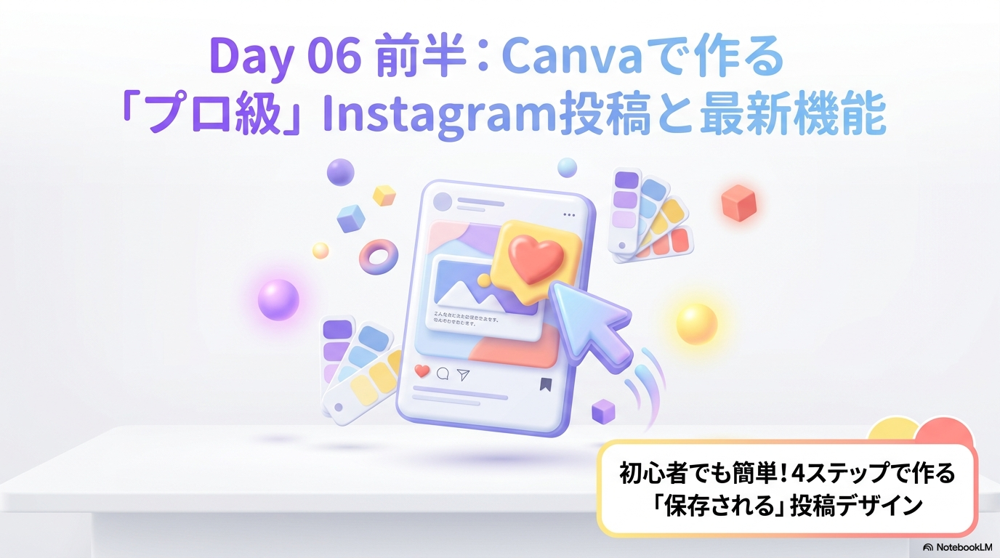
今日の前半は「4ステップ」で1枚の投稿を完成させる実践的な授業。Step 1でGeminiにキャッチコピーを作ってもらい、Step 2〜4でCanvaで仕上げていく流れを体で覚えよう。
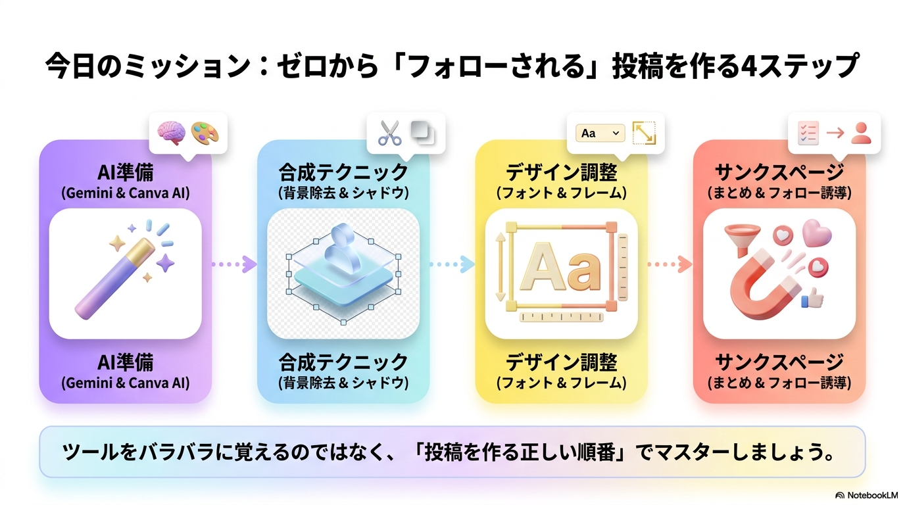
デザインの前にまず「言葉」を用意する。InstagramはビジュアルSNSだが、最初にスクロールを止めるのはキャッチコピーの力。GeminiやChatGPTに今更聞けない〇〇・知らないと損な〇〇などのバズワードを出してもらい、画像に乗せる言葉を先に決める。
今更聞けない〜 / 知らないと損な〜 / 〜始め方 などのバズワード定型句が、スクロールを止める最強ワード
Geminiへのプロンプト例：「Apple Watchを知らない人に紹介するInstagram投稿を1枚作ります。キャッチコピーと画像に入れる短い説明文を提案してください」
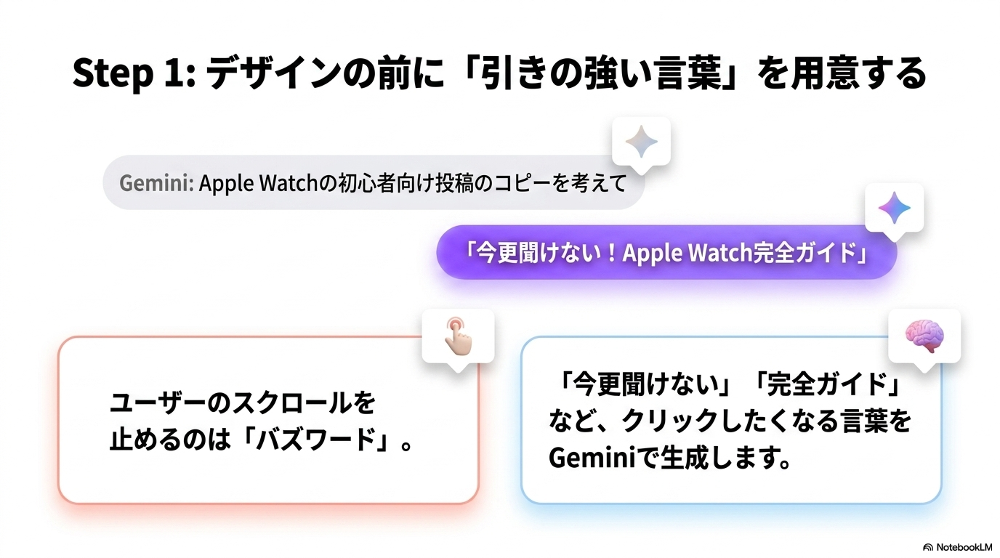
荒い写真や解像度が低い画像も、CanvaのAIが自動で高画質化してくれる。画像を選択 →「編集」→「高画質化」を押すだけ。ぼんやりした文字や古い写真が、くっきり蘇る。
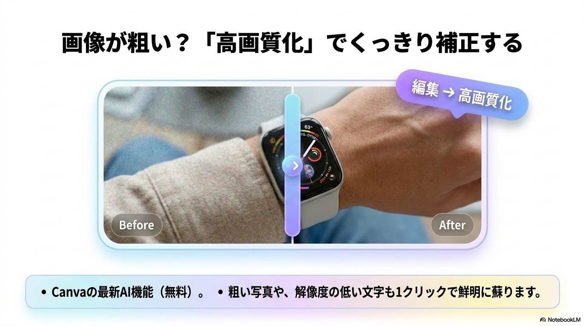
Canva 2026の目玉機能。1枚の画像を「背景」「被写体」「テキスト」などのレイヤーに自動分解し、それぞれを個別に動かしたり置き換えたりできる。AI（Gemini・ChatGPT）で生成した画像を微調整したいときにも大活躍。
「編集」→「マジックレイヤー」をクリック
数秒でレイヤー分解が完了
個別に選択して編集・移動・差し替え
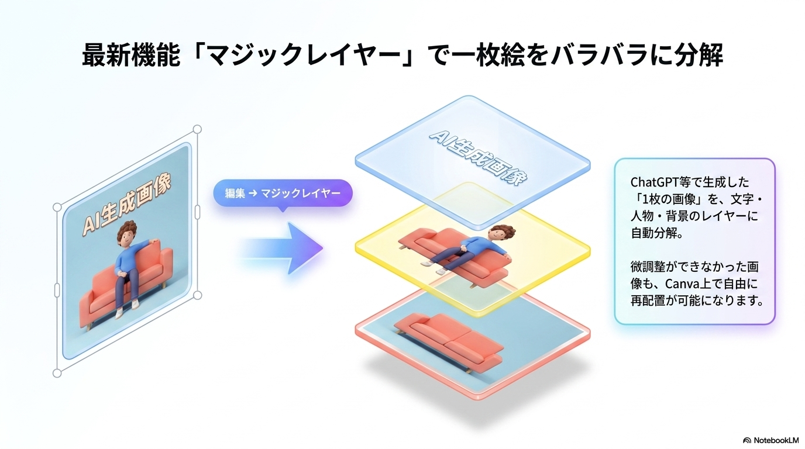
商品・人物・食べ物の写真から背景をワンタップで除去。「素材」でApple Watchの写真を配置し、「編集」→「背景除去」を選ぶだけ。切り抜いた被写体を好きな背景の上に乗せて世界観を作る。
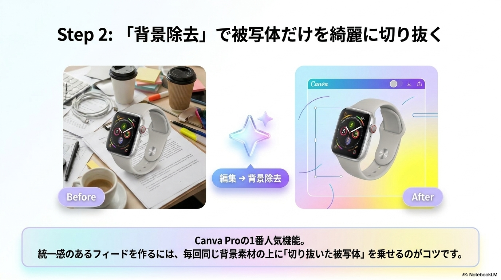
背景除去した被写体をそのまま乗せると「切り抜き感」が出て不自然に見える。「エフェクト」→「ドロップシャドウ」を適用すると、被写体の下に影が生まれ、背景に溶け込んだ自然な仕上がりになる。ぼかし・距離・不透明度を微調整してリアルな立体感を出そう。
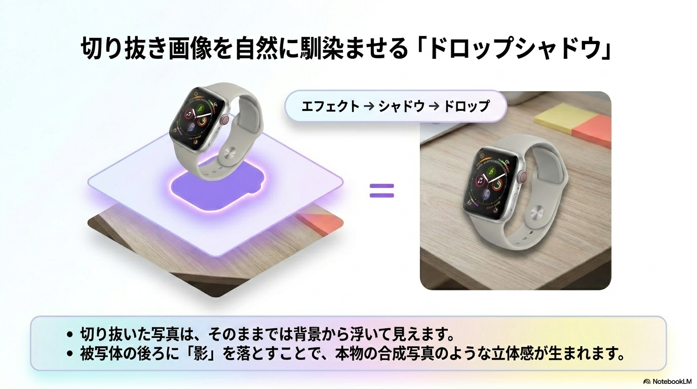
「素材」→「フレーム」から丸形・四角形のフレームを配置して、写真をはめ込むと整った印象になる。「グリッド」を使えば複数の写真を均等に並べることができ、整然とした情報量の多い投稿が作れる。
1枚の写真をデザインのアクセントとして見せたいとき
複数枚の写真をまとめて見せたいとき（商品比較・ビフォーアフターなど）
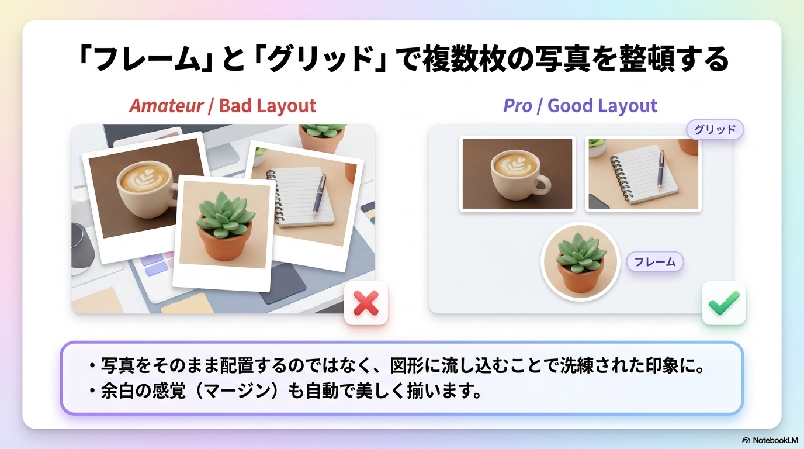
フォントは「感情を伝える」デザインの要素。3種類の特性を覚えておこう：
上品・高級感・落ち着き。高単価商品・ビューティー系に合う
読みやすい・誠実・情報量に強い。テキスト主体の投稿に最適
親近感・温かみ・個人らしさ。ライフスタイル系・DIY系に効果的
「見出しには明朝体、本文にはゴシック体」の組み合わせが一番読みやすく、統一感が出る
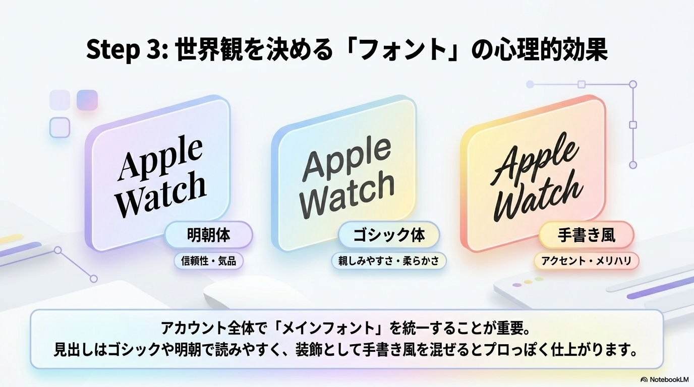
投稿の最後にサンクスページを1枚入れると、フォロー率が大幅に上がる。「ここまで読んでくれてありがとう！フォローすると毎週〇〇をお届けします」という一言を添えるだけ。Canvaのテンプレートでthanks・サンクスと検索すると既製のデザインがすぐ使える。
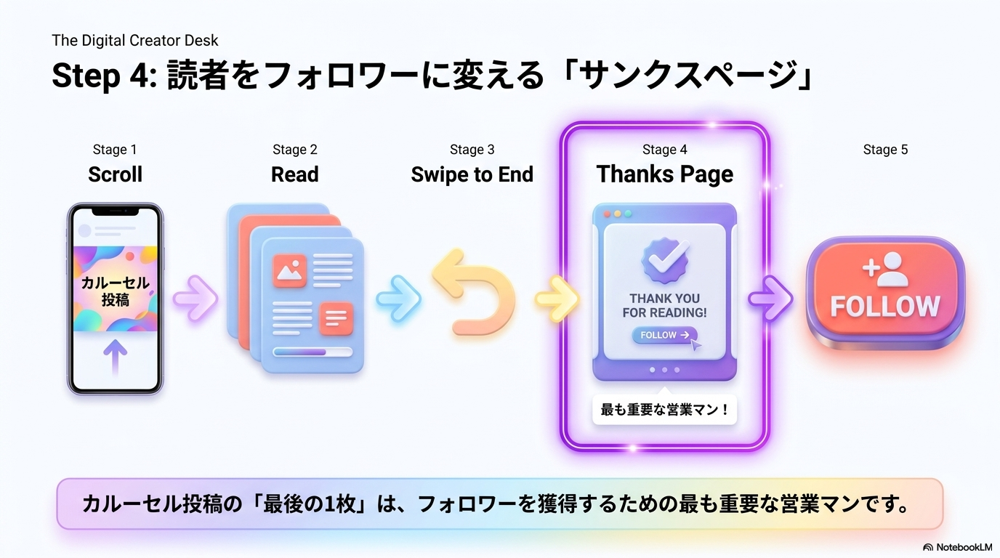
サンクスページには「保存ボタン」と「フォローボタン」の両方を促す文言を入れる。保存されるとInstagramのアルゴリズムが「価値あるコンテンツ」と判断してリーチが拡大する。フォローを促すと同時に「保存して後で見返してね」の一言を必ず入れよう。
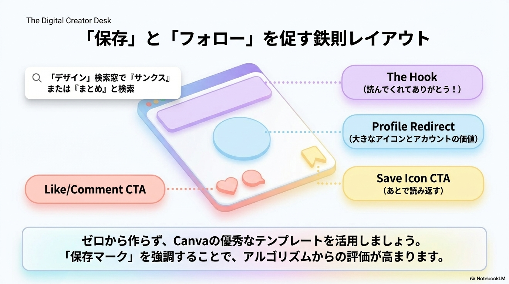
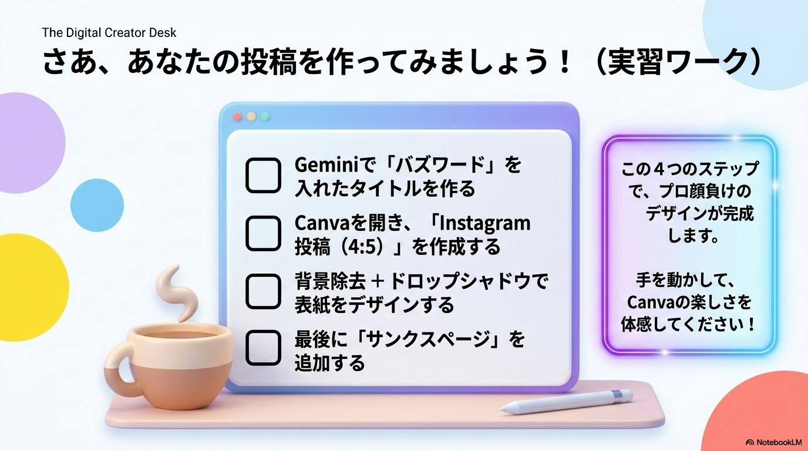
今日学んだ4つのステップを使って、実際にCanvaで投稿を1枚作ってみよう。
「[Apple Watch] を [知らない人] に紹介するInstagram投稿を1枚作ります。キャッチコピーと画像に入れる短い説明文を提案してください」— ［推し］と［届けたい人］は自分の内容に変えてOK
🎥 参考動画箇所: youtu.be/icCvGRU7Pjw
Canvaトップページ→「SNS」→「Instagram投稿（4:5）」を選択。ファイル名をつけて自分のフォルダに移動する（例：山田太郎6月11日投稿デザイン）
「素材」から写真を配置 →「編集」→「背景除去」で被写体だけを切り抜く。好きな背景画像を最背面に配置する
切り抜いた素材を選択 →「エフェクト」→「ドロップシャドウ」を適用。ぼかし・距離・不透明度を微調整して背景に馴染ませる
Geminiが提案したキャッチコピーを入力。見出しは明朝体・本文はゴシック体に変更して世界観を統一する
「素材」からフレームまたはグリッドを配置し、商品写真をドラッグして挿入する
新規ページを追加し、「テンプレート」から「サンクス」「thanks」を検索して配置。「フォローしてね」の一言を添える
サンクスページにアニメーション「パン」を適用すると動きのある投稿になる（動画ページはMP4でダウンロード）
「共有」→「ダウンロード」→「PNG」を選択。PCで編集してスマホのCanvaアプリから開いてダウンロードすると、そのままInstagramに投稿できて便利
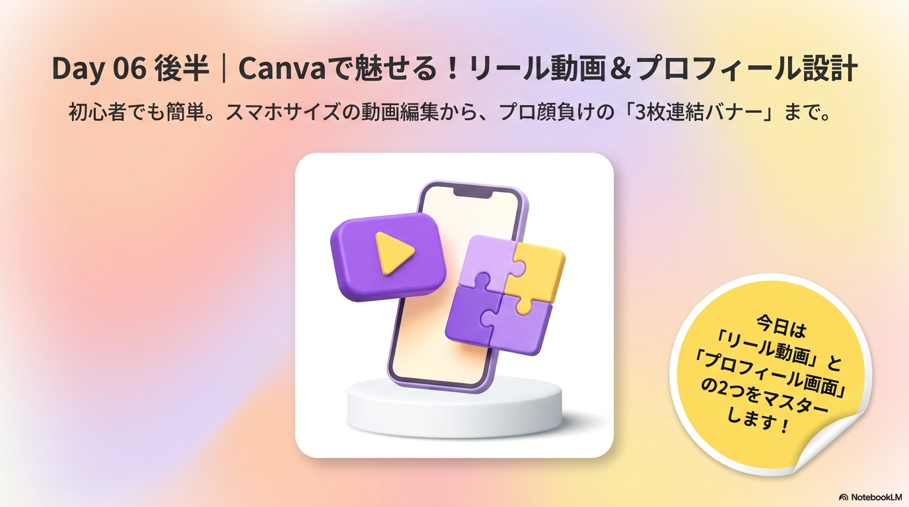
後半は2部構成。第1部では「リール動画を5つのテクニックで仕上げる」実践スキルを身につける。第2部では「プロフィール画面を整えるための3つの裏技」を習得し、Canvaでインスタを完全攻略する。
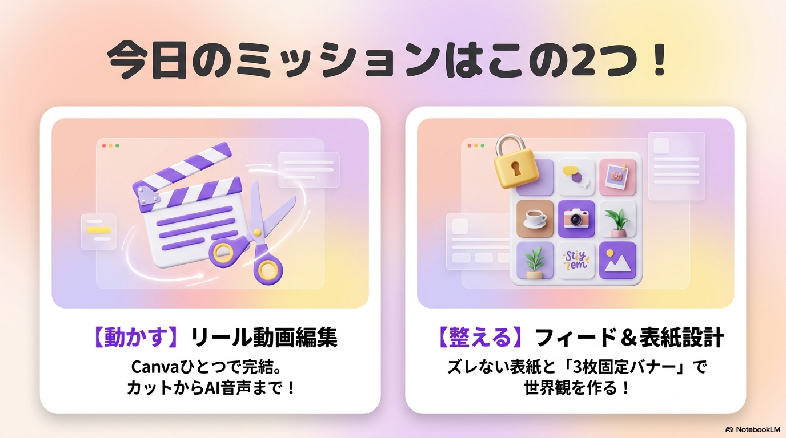
まずは動画の不要部分をカットして、テンポよく仕上げる。Canvaの動画編集ではSキー（または右クリック→「分割」）で好きな場所を切断できる。速度設定から最大2倍速にすることで、見ていて飽きないスピード感を演出しよう。
動画クリップを選択 → カーソルを切断したい位置に合わせて「S」キー → 不要部分を選択して Delete
動画クリップを選択 → 「速度」→ 倍速（最大2.0x）を設定
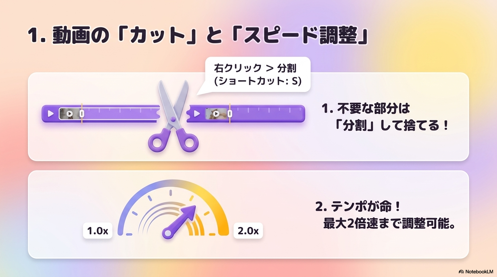
動画と動画の「つなぎ目」にトランジションを入れると、プロの編集感が一気に出る。おすすめは「ディゾルブ」（自然にフェードする）または「スライド」（スムーズに流れる）の2種類。迷ったらディゾルブを選んでおけば間違いなし。
クリップとクリップの間の「+」アイコン（「切り替えを追加」）をクリック → ディゾルブまたはスライドを選択
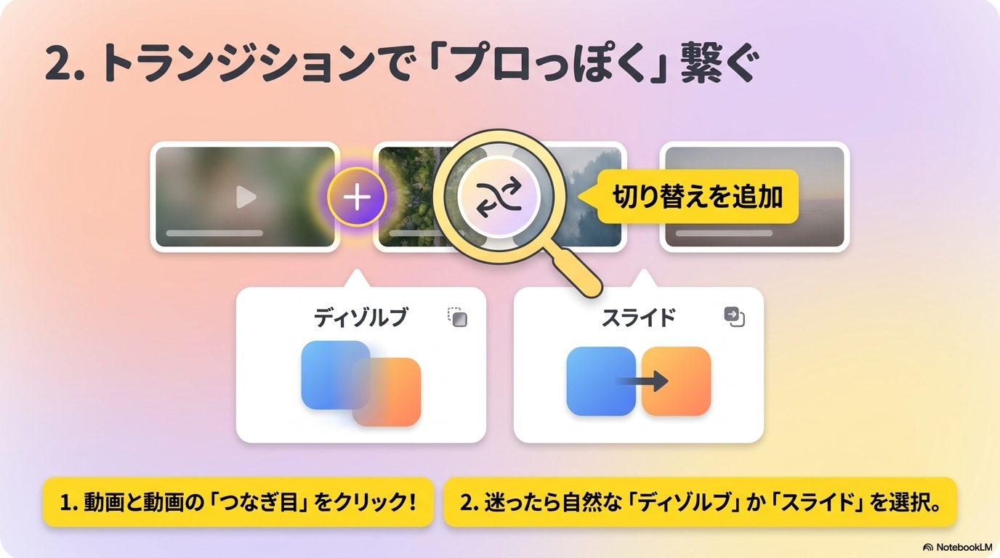
リール動画の上にそのままテキストを乗せると、背景と同化して読めなくなることがある。解決策が「袋文字エフェクト」。文字の周囲に太い縁取りをつけることで、どんな背景の上でも文字がくっきり視認できるようになる。スマホの小さい画面でも確実に読んでもらえる必須テクニック。
テキストを追加 → フォントを「太字」に設定（スマホ視聴では太字が基本）
テキストを選択 →「エフェクト」→「袋文字」→ 縁取りの色（黒など）と太さを設定
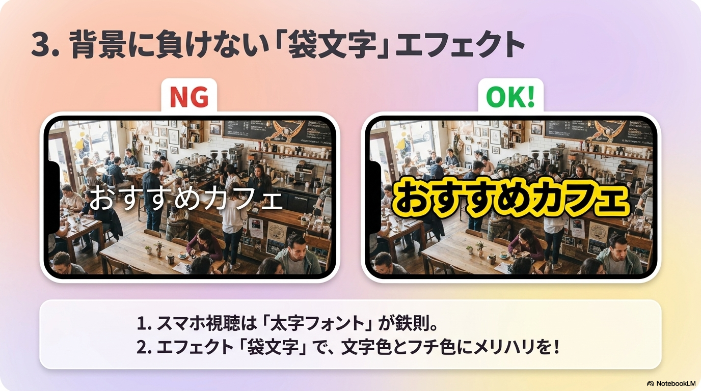
タイムライン（紫のバー）でテキストや素材の表示タイミングをドラッグ調整できる。「映像が映ってから0.5秒後にタイトルが出る」「サビに合わせてロゴが登場する」といった演出で、視聴者を最後まで引き込もう。
テキスト or 素材を右クリック →「タイミングを表示」→ 紫のバーをドラッグして開始・終了タイミングを調整
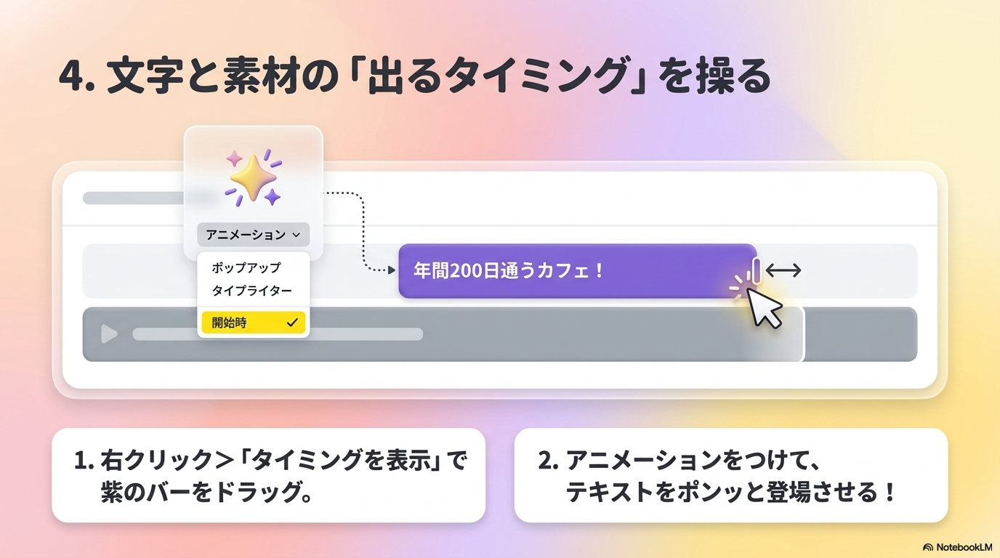
音声をつけると、動画の完成度が格段に上がる。自分で収録するか、AIに任せるかの2択。AI音声は無料で使えて、テキストを貼るだけで自然な日本語ナレーションを生成してくれる。
「音源」→「ナレーションを収録」→ マイクで自分の声を録音。気軽に一発録り！
「音源」→「AI音声を生成」→ テキストを貼り付けて声質（アイリ・ハルキ等）を選択 → 自然なナレーションを自動生成
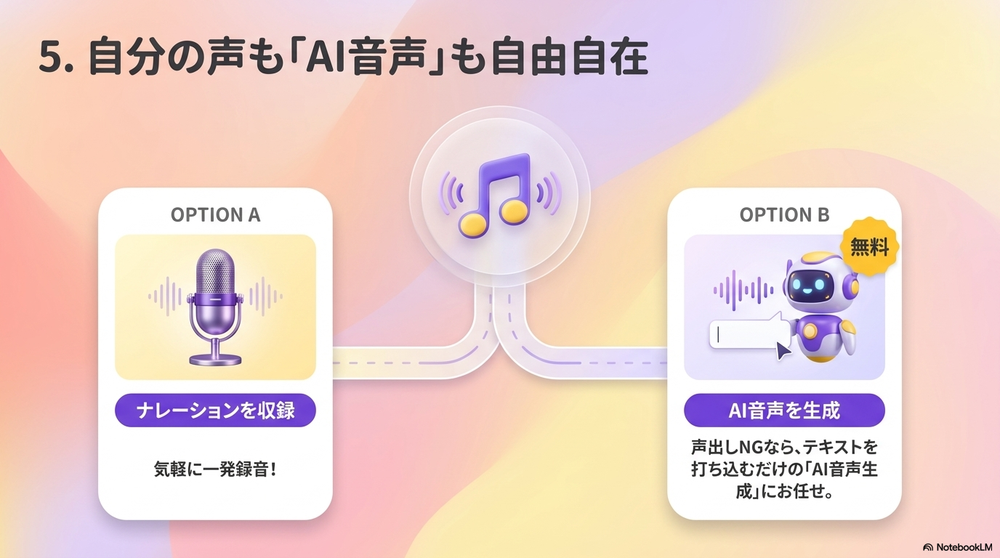
プロフィール画面はあなたの「お店の看板」。ここを整えることで、リールから飛んできた人が「フォローしたい」と思うかどうかが決まる。Canvaで作れる3つの裏技を使って、フィードを一瞬でプロ仕様に見せよう。
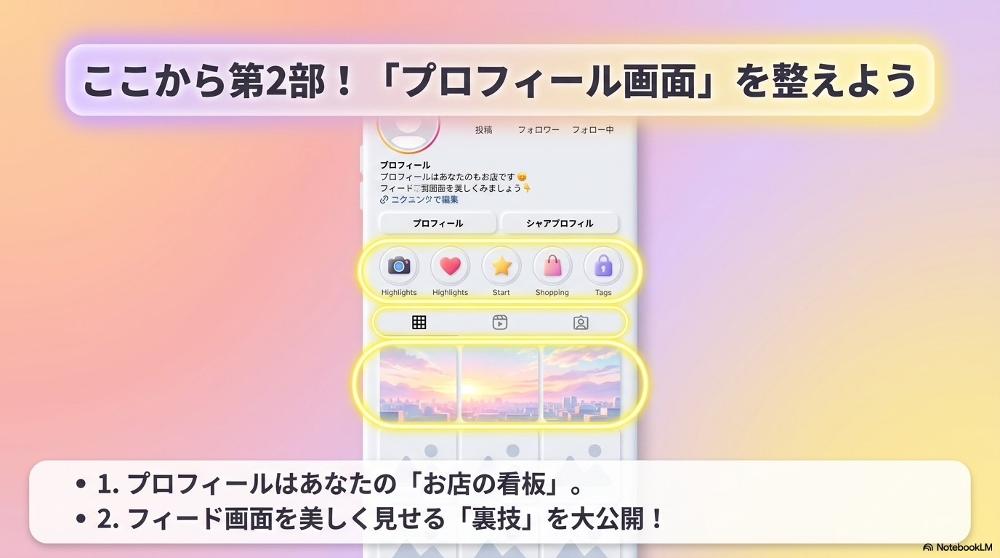
リール動画の表紙を設定したとき、プロフィール画面に並ぶと文字が切れてズレて見えた経験はないだろうか。原因はサイズの問題。プロフィール上では1080×1920のリール画像が「1012×1350」の縦長範囲に切り取られて表示される。この安全領域の中に文字や重要要素を収めることでズレを防げる。
Canvaで1080×1920の新規ファイルを作成
「ガイド追加」→ カスタム設定 → 列ギャップ: 1012、行ギャップ: 1350 → 紫色の枠（安全領域）が表示される
タイトル・文字など重要要素はすべてこの枠内に収める
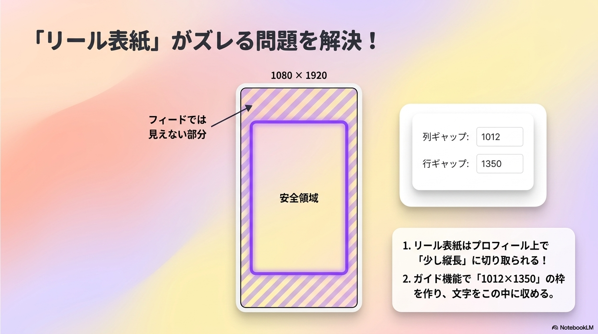
投稿する前にプロフィールの見た目を確認できる便利な方法。自分のInstagramのプロフィール画面をスクリーンショットしてCanvaに貼り、その上から「投稿グリッド（3×2）」フレームを重ねる。作成した表紙やサムネイルをそのグリッドに入れてみることで、並んだときの色使いや世界観のバランスを投稿前に確認（シミュレーション）できる。
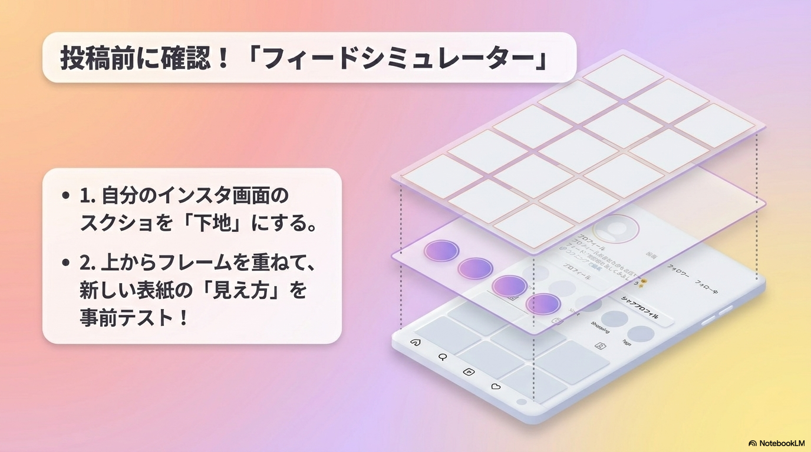
プロフィール画面の上部3枚を1つの横長バナーとして見せる「3枚固定連結バナー」。自己紹介や看板メニューを大きく見せられる最強の第一印象づくりのテクニック。仕組みは「巨大な1枚絵を3等分して、3枚の投稿として順番に投稿」するだけ。
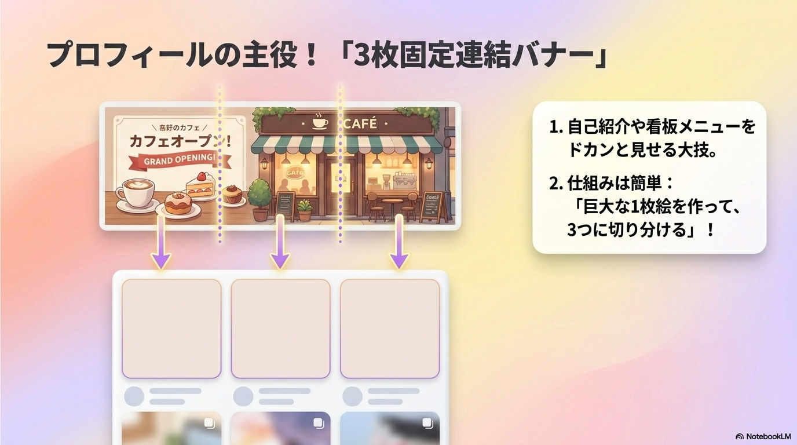
Canvaでカスタムサイズ「幅3036 × 高さ1350」の新規ファイルを作成する。これは投稿サイズ（1012×1350）の横3枚分にあたる。まず横長の一枚絵としてデザインを自由に完成させ、その後3枚に切り分ける。
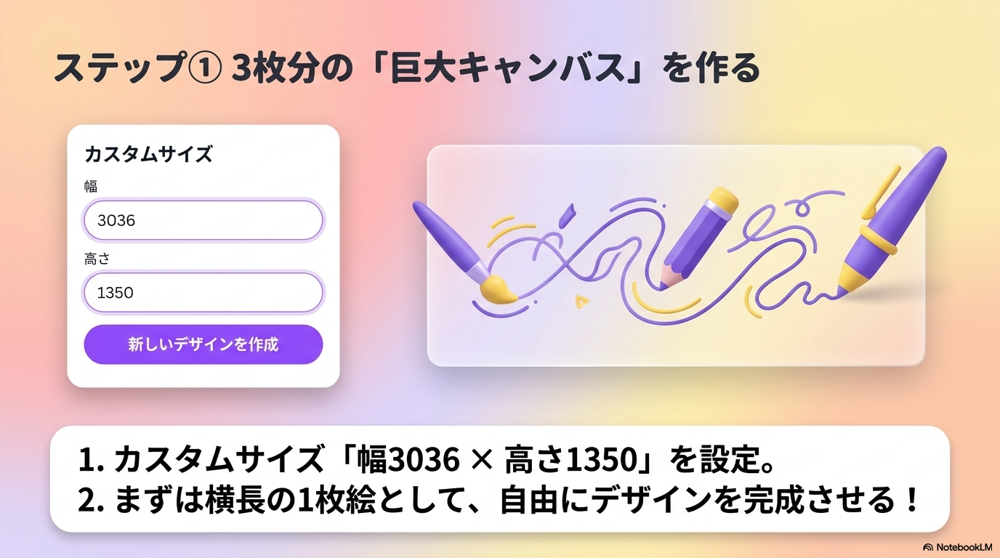
完成した横長バナーを切り分ける手順：投稿サイズ（1080×1350）の新規ファイルを開き、横長バナー画像をそこに配置する。同じ操作を3ページ分繰り返し、1ページ目は「左側」・2ページ目は「真ん中」・3ページ目は「右側」が表示されるようにずらして配置し、それぞれ別々のPNG画像としてダウンロードする。
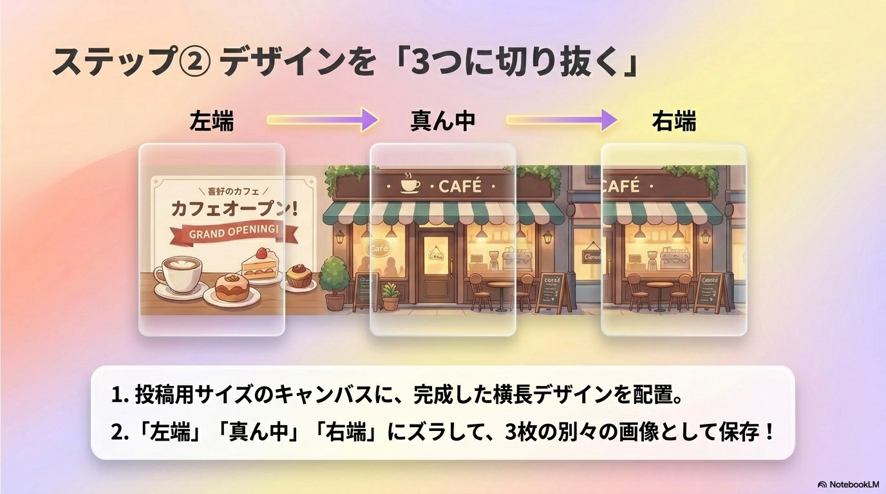
右の画像から順番に投稿する — これが絶対に守るべきルール。Instagramは新しい投稿を左へ押し出す仕組みになっているため、「右端 → 真ん中 → 左端」の順番で投稿することで、プロフィールに並んだときに正しく左から右へ1枚の絵として見えるようになる。逆の順番で投稿すると左右が反転してしまう。
まず「右端の画像」を投稿してピン留め
次に「真ん中の画像」を投稿してピン留め
最後に「左端の画像」を投稿してピン留め
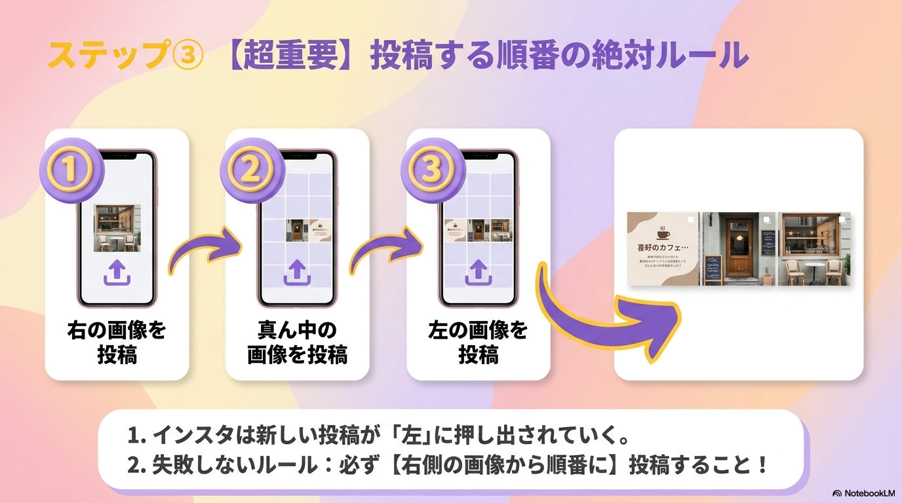
今日学んだCanvaの3本柱（リール編集・ガイド設定・連結バナー）は、すべてCanvaの無料機能だけで実現できる。これを使いこなすだけで、インスタのプロフィールが一気にプロ仕様に変わる。
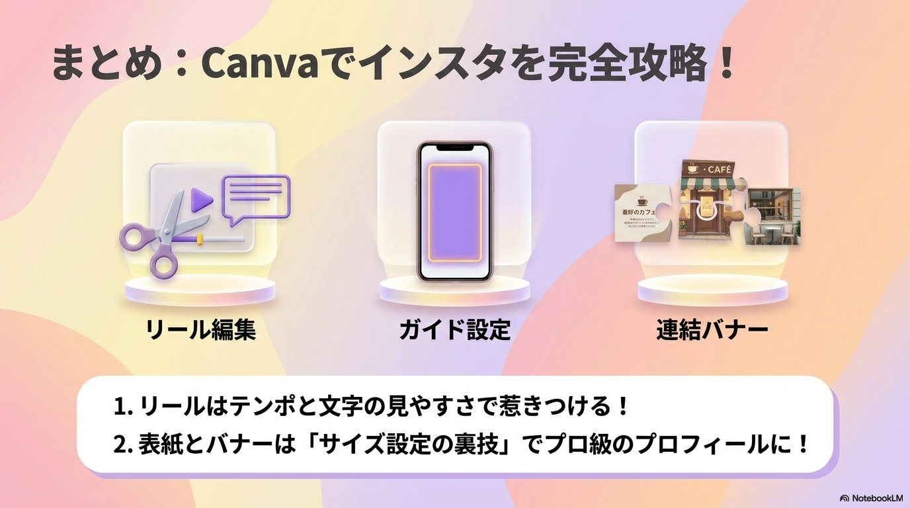
🎥 参考動画: youtu.be/fn9BRQpxr8c
Canvaトップページ→「動画」→「Instagramリール動画」を選択して新規ファイル作成。ファイル名をつけて自分のフォルダに移動する（例：山田太郎6月11日リール動画）
「素材」から「カフェ」などのキーワードで動画素材を検索して配置する。カーソルを切断したい位置に合わせて「S」キーを押し（または右クリック→「分割」）、不要な部分を削除する
動画クリップを選択→「速度」→「2.0x」に設定。テンポの良いリールに仕上げよう
クリップとクリップの繋ぎ目にある「+」（切り替えを追加）をクリック→「ディゾルブ」を選択
テキストを追加→フォントを太字に設定→「エフェクト」→「袋文字」で縁取りをつける。端に寄せすぎるとInstagramのUIで切れるので十分な余白を確保すること
テキストを右クリック→「タイミングを表示」→ 紫のバーをドラッグして、映像の流れに合ったタイミングに設定する
「素材」からアイコン等を追加し、右クリック→「アニメーション」→「カスタムアニメーション」でドラッグした軌跡に沿って動かせる
「音源」→「ナレーションを収録」（自分の声）または「AI音声を生成」（テキストを入力して声質を選択）で音声を追加する。完成したら「共有」→「ダウンロード」→「MP4形式」でダウンロード